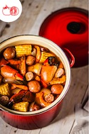

OUR PRESS
November 27, 2013
Where to Eat Clean Across the Country
The holidays are generally all about pork on sugar on booze. This year, try
countering those indulgences by eating a little cleaner when you can. There
are tons of great restaurants around the country that practice
sustainability, pay attention to the seasons, and source humanely raised
meat. After all, that's what eating healthfully is about. Here now, a roundup
of some of those restaurants.
May 06, 2013
Eater Charleston
The Ordinary's Mike Lata and Adam Nemirow on the James Beard
Nomination, and 10 Years at FIG
April 23, 2013
GQ Magazine | The Ten Best Whiskey Bars in America
The New Whiskey Rebellion
February 11, 2013
Esquire
Cocktail of the Week: A Drink Fit for The Matrix
February 01, 2013
The Daily Meal 101 Best Restaurants in America for 2013
The Daily Meal talks about the best restaurants in America and how they arrive at the final list of 101.
January 09, 2013
The F.E.D. Fifty | Cocktail, Wine & Beer Bars
Where to Drink in 2013
January 04, 2013
Garden & Gun
"Our Favorite Meals of 2012"
September 12, 2012
Sorghum Travels from the South to the Mainstream
Chef Mike Lata talks about the "on the rise" ingredient sorghum and how
today's Chefs are using it. His peeronal favorite way to eat it: "Sorghum
butter on breads and warms biscuits"

August 02, 2012
Le Creuset Entertaining Blueprint Series
Chef Lata shares his formula for hosting a casual, fun Lowcountry Boil,
complete with his favorite summertime beers and music playlist.
July 18, 2012
Huffington Post, July 2012
"9 Things We Love About Charleston"
FOR MEDIA
For media inquiries, please contact Sarah Abell at Baltz & Company at
917.584.8567 or email
sabell@baltzco.com.